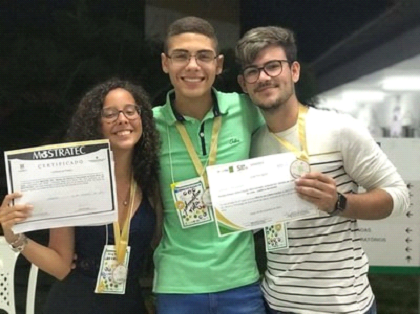

PROJETO DE PESQUISA
Título do Projeto: A PRIVACY AWARE ARCHITECTURE FOR ELECTRONIC HEALTH RECORDS
Electronic Health Record (EHR) applications are digital versions of paper-based patient’s health information. Traditionally, medical records are made on paper. However, nowadays, advances in information and communication technology have made it possible to change medical records from paper to electronic medical records. Thus, like the traditional paper medical record, an electronic version of the record is a set of information recording an individual’s medical history. Unlike conventional paper medical records, the electronic version is stored in electronic format following the required standards. Thus, they are increasingly adopted to improve healthcare quality, such as convenient access to patient medication histories and clinic visits, more effortless follow-up of patient treatment plans, and precise medical decision-making process. EHR plays a vital role in managing, exchanging, and storing information within health care organizations. Health care organizations are obliged to adopt strategies for information security and privacy associated with access to medical and sensitive information. However, at the same time, the information needs to be available for authorized health care professionals carrying out patient treatment.
Título do Projeto: USO DE SIMULADORES COMO FERRAMENTA NO ENSINO-APRENDIZAGEM DE REDES DE COMPUTADORES
O desenvolvimento deste trabalho se justifica, entre outros motivos, pela necessidade de um novo cenário educacional no qual é fundamental conhecer novas formas de aprender e de ensinar, de comunicar e de representar conhecimento para atender aos alunos que pertencem a esta geração. Em relação ao ensino-aprendizagem de redes de computadores, o processo também depende de infraestrutura de laboratórios que, proporcione ao aluno, vivenciar experiências práticas com manuseio de equipamentos e não apenas, limita-se a abastração do contéudo repassado pelo professor, através das aulas expositivas. Diferente das disciplinas de programação, por exemplo, que necessitam em grande parte, apenas de computadores. A disciplina de redes, além de necessitar de computadores, se faz necessário, o uso de equipamentos com hardware especializado, tais como: roteadores, acess point, firewall e switchs. Isso para que os alunos possam vivenciar experiências bem próximas da realidade de sua futura atuação profissional. O software de simulação de redes escolhido, foi o Cisco Packet Tracer. A escolha do software Cisco Packet Tracer, foi devido ao seu uso nas disciplinas de redes de computadores no IFRN - Campus Mossoró. Cisco Packet Tracer (Cisco, 2016) é uma ferramenta de aprendizado que suporta uma vasta gama de simulações físicas e lógicas, além de fornecer ferramentas de visualização para ajudar a entender o funcionamento internos de uma rede.
Título do Projeto: Desenvolvimento de software em linguagem de programação Python para contagem de unidades formadoras de colônias (UFC) a partir da biblioteca OPENCV
Levando em consideração a ação de microrganismos patogênicos e a necessidade de monitorá-los e de quantificar o seu crescimento em meios como a água ou alimentos, visando a preservação da saúde pública, torna-se necessário o aprimoramento de métodos de contagem de colônias de microrganismos em placas de Petri. Objetivando a criação de um software simples e de baixo custo para a contagem automática de colônias de bactérias de formato regular, serão usadas a linguagem de programação Python, bem como sua biblioteca de processamento de imagens OpenCV. Com isso, é esperada a obtenção de um programa eficiente para a utilização em laboratórios de Biologia ou de Microbiologia, aumentando a produtividade e reduzindo o estresse e a fadiga dos pesquisadores, além de minimizar erros de contagem. A avaliação da efetividade do algoritmo deverá ser realizada por meio da comparação com resultados de contagens manuais obtidos em bancos de dados disponíveis na internet.
RESIDENCIA EM TIC 08
O objetivo deste projeto é a capacitação e formação de recursos humanos em Cloud Services com o intuito de contribuir com o seu desenvolvimento no setor de Tecnologia da Informação na região em que o projeto for desenvolvido no Brasil e, com a ampliação, consequentemente, da inovação nesta área. Estes resultados desejados são baseados na necessidade atual que o país tem de investimentos nesta tecnologia para conseguir atender suas demandas atuais e futuras.
Estação meteorológica Samanaú.PCD
É uma plataforma de coleta de dados de baixo custo, modular e flexível, que permite sua utilização para medições em larga escala de granularidade, podendo ter seus dados transmitidos localmente, via enlace de rádio frequência (RF) ou via satélite. O sistema é formado por módulos, uma central, e a interface com usuário. Os módulos utilizam ondas de rádio para enviar dados para a central, de onde os dados são processados em informações úteis para um usuário do sistema e finalmente representados pela camada de distribuição para tornar possível sua visualização.

PROJETO DE EXTENSÃO
Projeto de Extensão: Promovendo a capacitação profissional através da Academia Huawei (ICT) no IFRN
Um dos objetivos dos institutos federais é buscar parcerias com empresas atuantes no mercado de trabalho, de modo a fortalecer a cadeia produtiva nas regiões onde se localizam. Sendo assim, o projeto tem como objetivo o desenvolvimento de meios e processos de produção, inovação e transferência de conhecimento e à ampliação de oportunidades educacionais, facilitando o acesso ao processo de formação e de qualificação. Consequentemente, motivando os alunos a entrarem no mercado de trabalho e despertando o lado empreendedor de cada um. O projeto será realizado em parceria com a Huawei, empresa líder global em soluções de Tecnologia da Informação e Comunicação (TIC), com intuito de oferecer treinamento para obtenção da certificação em tecnologias como Redes 5G, Inteligência Artificial, Cloud Service e Routing & Switching. Os treinamentos serão realizados on-line através da plataforma Talent da Huawei e a transmissão das aulas será por meio do Microsoft Teams.

Título do Projeto: CURSO TÉCNICO EM REDES PARA ATENDENTE DE PROVEDOR
Um dos objetivos dos institutos federais é buscar parcerias com empresas atuantes no mercado de trabalho, de modo a fortalecer a cadeia produtiva nas regiões onde se localizam. Sendo assim, o projeto tem como objetivo o desenvolvimento de meios e processos de produção, inovação e transferência de conhecimento e à ampliação de oportunidades educacionais, facilitando o acesso ao processo de formação e de qualificação. Consequentemente, motivando os alunos a entrarem no mercado de trabalho. O projeto tem como foco treinar e capacitar pessoas com conhecimento em operação de redes de computadores para atender demanda da empresa AeC Mossoró, empresa que de tecnologia que atua na área de relacionamento com clientes e outsourcing de processos de negócio (BPO). Os treinamentos serão realizados presencialmente nas dependências do campus IFRN- Campus Mossoró.
PARTICIPAÇÃO EM EVENTOS

1. Rodrigo Tertulino; Leonardo Negreiros e Ryan Rocha
IFRN – Campus Mossoró
Área temática: Tecnologia e Produção
1. SILVA, R. R. T.; SOARES, F. ; SILVEIRA, S. M. . Promovendo capacitação profissional através do centro de certificação no IFRN - Campus Mossoró. In: Exposição Científica, Tecnológica e Cultural (EXPOTEC), 2018, Mossoró. Promovendo capacitação profissional através do centro de certificação no IFRN - Campus Mossoró, 2018.

2. SILVA, R. R. T.; CORINGA, R. E. G. ; BARRA, R. V. L. .
Implementação do zabbix server como gerenciador de rede em laboratório acadêmico. In: Semana de Ciência, Tecnologia e Extensão do Instituto Federal do Rio Grande do Norte (Secitex), 2018, Natal. Implementação do zabbix server como gerenciador de rede em laboratório acadêmico, 2018.

3. SILVA, R. R. T.; PEDRO, V. C. S. ; COSTA, L. C. ; MOTA, J. F. S. . PROMOVENDO CAPACITAÇÃO PROFISSIONAL ATRAVÉS DO CENTRO DE CERTIFICAÇÃO NO IFRN. CAMPUS MOSSORÓ. 2020. (Apresentação de Trabalho/Outra).
4. MOSTRATEC. PROMOVENDO CAPACITAÇÃO PROFISSIONAL ATRAVÉS DO CENTRO DE CERTIFICAÇÃO NO IFRN. CAMPUS MOSSORÓ. 2020. (Feira).

A mostra
A Mostratec é uma feira de ciência e tecnologia realizada anualmente pela Fundação Liberato, em Novo Hamburgo/RS, que se destina à apresentação de projetos de pesquisa em diversas áreas do conhecimento humano, realizados por jovens cientistas do ensino médio e da educação profissional de nível técnico de todo o Brasil e do exterior.
Objetivos da Mostratec
Estimular estudantes na atividade de iniciação científica e tecnológica de forma acelerar o processo de expansão e renovação no quadro de pesquisadores;
Conduzir à sistematização e à institucionalização da pesquisa no ensino médio e profissional de nível técnico;
Estimular a imaginação, o prazer e a curiosidade através da pesquisa científica e tecnológica;
Promover a integração entre instituições de ensino, pesquisa e meio empresarial, possibilitando o desenvolvimento, a aplicação e a divulgação de novas tecnologias;
Possibilitar aos expositores e professores a integração com colegas de outras instituições de ensino de modo a ampliar suas relações e possibilitar o contato com outras culturas;
Proporcionar o intercâmbio e a participação de alunos e professores em feiras afiliadas (nacionais e internacionais).
Artigos Publicados
TERTULINO DA SILVA, RODRIGO RONNER; ANTUNES, N. ; MORAIS, H. . Privacy in electronic health records: a systematic mapping study. Journal Of Public Health-Heidelberg , v. 31, p. 1-20, 2023.
TERTULINO DA SILVA, RODRIGO RONNER; ANTUNES, NUNO . PADRÕES DE SEGURANÇA PARA DISPOSITIVOS IOT LOW-END: UMA REVISÃO COMPARATIVA. RECIMA21 - Revista Científica Multidisciplinar - ISSN 2675-6218, v. 4, p. e412437, 2023.
SILVA, R. R. T.; LIMA, R. W. ;LEITE, C. R. M.. DESENVOLVIMENTO SEGURO DE APLICAÇÕES WEB. RECIMA21 - Revista Científica Multidisciplinar - ISSN 2675-6218, v. 2, p. 128-149, 2021.
SILVA, R. R. T.;OLIVEIRA, C. ; PEIXOTO, C. ; COUTO, B. . Uso do Cisco Packet Tracer como ferramenta no ensino-aprendizagem de Redes de Computadores no IFRN - Campus Mossoró. REVISTA SCIENTIATEC, v. 6, p. 67-78, 2019.
SILVA, R. R. T.; LIMA, R. W. ; LEITE, C. R. M. ; SILVA, R. R. T.. INVESTIGAÇÃO DE SEGURANÇA NO MOODLE. RENOTE. REVISTA NOVAS TECNOLOGIAS NA EDUCAÇÃO, v. 12, p. 1-10, 2015.
Citações: SCOPUS
Textos em jornais de notícias/revistas
SILVA, R. R. T.. Carnaval Seguro. Jornal de Fato, , p. 5 - 5, 19 fev. 2023.
Trabalhos completos publicados em anais de congressos
SILVA, R. R. T.; LIMA, R. W. ;LEITE, C. R. M.. Vulnerabilidades de Segurança no Moodle. In: Escola POtiguar de Computação e suas Aplicações (EPOCA), 2014, Santa Cruz - RN. Anais da VII Escola de Computação e suas Aplicações - EPOCA 2014, 2014. p. 12-21.
SILVA, R. R. T.; LIMA, M. V. A. ; CHAVES, J. O. M. ; LIMA, R. W. ; MARQUES, C. K. M. ; SILVA, F. R. M. E. ; FURTADO, U. M. . Análise Comparativa da Eficiência Energética dos Protocolos de Acesso ao Meio B-MAC e L-MAC em Rede de Sensores Sem Fio. In: Workshop Técnico-Científico de Computação (WTCC)/Workshop de Sistemas Embarcados do Semiárido do Nordeste (WSESANE), 2013, Mossoró-RN. ANAIS DOS ARTIGOS DO III WORKSHOP TÉCNICOCIENTÍFICO DE COMPUTAÇÃO, 2013. p. 6-11.
SILVA, R. R. T.; CHAVES, J. O. M. ; LIMA, M. V. A. ; M. NETO, F. M. ; LEITE, C. R. M. . BestResources: Ferramenta de Apoio à Alocação de Recursos Humanos para Projetos de TI no dotProject. In: Escola Potiguar de Computação e suas Aplicações (EPOCA 2012), 2012, Natal-RN. ANAIS DOS ARTIGOS DA V ESCOLA POTIGUAR DE COMPUTAÇÃO E SUAS APLICAÇÕES, 2012. p. 13-18.
SILVA, R. R. T.; RODRIGUES, J. M. ; LEITE, J. N. F. . Virtualização e Seus Benefícios para Empresas com Hyper-v; um Estudo de Caso na Indústria de Tempero Regina Ltda.. In: VIII SEGeT ? Simpósio de Excelência em Gestão e Tecnologia, 2011, Resende-RJ. VIII SEGeT ? Simpósio de Excelência em Gestão e Tecnologia, 2011. p. 1-11.
Resumos expandidos publicados em anais de congressos
SILVA, R. R. T.; SOARES, F. ; SILVEIRA, S. M. . Promovendo capacitação profissional através do centro de certificação no IFRN - Campus Mossoró. In: Exposição Científica, Tecnológica e Cultural (EXPOTEC), 2018, Mossoró. Promovendo capacitação profissional através do centro de certificação no IFRN - Campus Mossoró, 2018.
SILVA, R. R. T.; CORINGA, R. E. G. ; BARRA, R. V. L. . Implementação do zabbix server como gerenciador de rede em laboratório acadêmico. In: Semana de Ciência, Tecnologia e Extensão do Instituto Federal do Rio Grande do Norte (Secitex), 2018, Natal. Implementação do zabbix server como gerenciador de rede em laboratório acadêmico, 2018.
SILVA, R. R. T.; DANTAS, L. P. L. ; CABRAL, L. R. V. . A APLICABILIDADE TECNOLÓGICA NA MEDICINA: CRIAÇÃO DE CENTROS DE PESQUISA MÉDICA NO BRASIL. In: 3º EXPOTEC e 1ª SEMADEC, 2015, Apodi. 3ª EXPOTEC e a 1ª SEMADEC - Enfoques contemporâneos na Agricultura Familiar, 2015.
SILVA, R. R. T.; PAIVA, R. N. A. ; OLIVEIRA, B. V. M. . DIFICULDADES DE APRENDIZADO NO CURSO DE INFORMÁTICA: COMO ENFRENTAR ESSE PROBLEMA. In: 3º EXPOTEC e 1ª SEMADEC, 2015, Apodi. 3ª EXPOTEC e a 1ª SEMADEC - Enfoques contemporâneos na Agricultura Familiar, 2015
SILVA, R. R. T.; PAMPLONA, C. B. S. ; MEDEIROS, J. V. S. . TOMORROW: UM APLICATIVO PARA INICIANTES DA LÍNGUA INGLESA. In: 3º EXPOTEC e 1ª SEMADEC, 2015, Apodi. 3ª EXPOTEC e a 1ª SEMADEC - Enfoques contemporâneos na Agricultura Familiar, 2015
SILVA, R. R. T.; DANTAS, J. ; LIMA, L. C. C. ; LIMA, C. S. . INCLUSÃO DIGITAL: UMA PERCEPÇÃO DO APRENDIZADO ENTRE ADULTOS E IDOSOS. In: 3º EXPOTEC e 1ª SEMADEC, 2015, Apodi. 3ª EXPOTEC e a 1ª SEMADEC - Enfoques contemporâneos na Agricultura Familiar, 2015.
Apresentações de Trabalho
1.
SILVA, R. R. T.; PEDRO, V. C. S. ; COSTA, L. C. ; MOTA, J. F. S. . PROMOVENDO CAPACITAÇÃO PROFISSIONAL ATRAVÉS DO CENTRO DE CERTIFICAÇÃO NO IFRN ? CAMPUS MOSSORÓ. 2020. (Apresentação de Trabalho/Outra).
2.
SILVA, R. R. T.. Minicurso: USO DA PLATAFORMA TEAMS. 2020. (Apresentação de Trabalho/Seminário).
3.
SILVA, R. R. T.; PEDRO, V. C. S. ; COSTA, L. C. ; MOTA, J. F. S. . Promovendo capacitação profissional através do centro de certificação no IFRN ? Campus Mossoró. 2019. (Apresentação de Trabalho/Outra).
4.
SILVA, R. R. T.. Simuladores e Emuladores de redes de computadores: Aspectos práticos e funcionais... 2018. (Apresentação de Trabalho/Conferência ou palestra).
5.
SILVA, R. R. T.. Avaliador de projetos universitários ligados a Inovação e Tecnologia.. 2018. (Apresentação de Trabalho/Outra).
6.
SILVA, R. R. T.. Como elaborar TCC na área de infraestrutura e aplicações de redes de computadores. 2016. (Apresentação de Trabalho/Conferência ou palestra).
7.
SILVA, R. R. T.. Certificação CCNA Routing and Switching. 2016. (Apresentação de Trabalho/Conferência ou palestra).
8.
SILVA, R. R. T.. Certificação CCNA Routing and Switching. 2015. (Apresentação de Trabalho/Conferência ou palestra).
9.
SILVA, R. R. T.; LIMA, R. W. ;LEITE, C. R. M.. Vulnerabilidades de Segurança no Moodle. 2014. (Apresentação de Trabalho/Simpósio).
10.
SILVA, R. R. T.; MARQUES, C. K. M. ; SILVA, F. R. M. E. ; CHAVES, J. O. M. ; LIMA, M. V. A. ; FURTADO, U. M. ; LIMA, R. W. . Análise Comparativa da Eficiência Energética dos Protocolos de Acesso ao Meio B-MAC e L-MAC em Rede de Sensores Sem Fio. 2013. (Apresentação de Trabalho/Outra).
11.
SILVA, R. R. T.. III Semana Acadêmica - Faculdade Mater Christi. 2003. (Apresentação de Trabalho/Seminário).